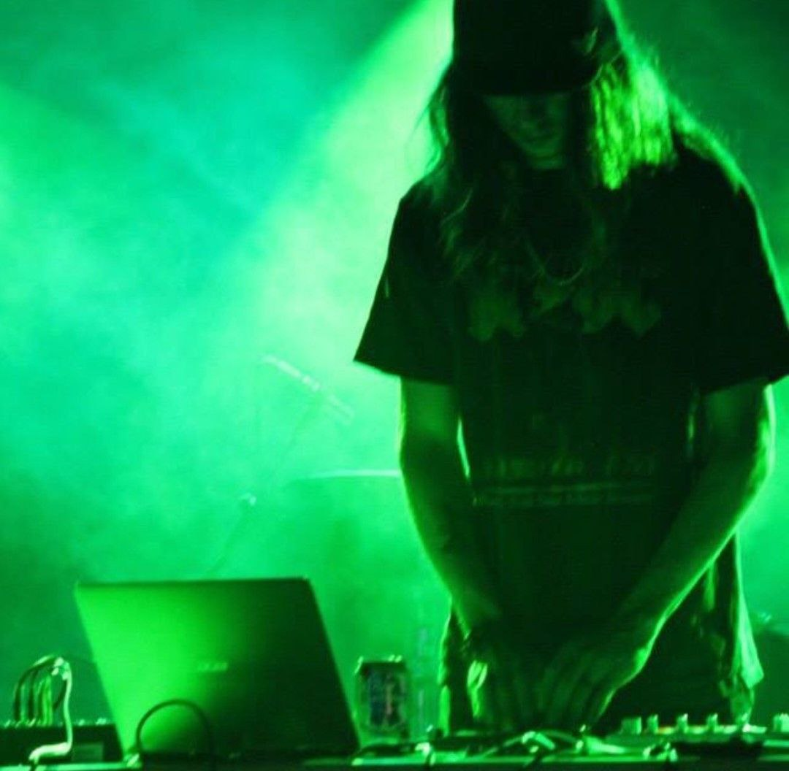

now | blog | wiki | recipes | bookmarks | contact | about | donate
* * * back home * * *
solo musical project started in 2012, still active
Arkane is my solo electronic music project. I started it sometime in the autumn of 2012 in Tulsa, OK, because I never had any luck playing in bands. I figured doing solo stuff would be a lot easier.
I did a few different albums as Arkane, and am planning on finally finishing up lov3, which has slowly been in the works since 2017-ish.
Between 2012 and 2017, Arkane played several live shows around the Tulsa and Broken Arrow, Oklahoma areas. Some venues include Venue Shrine, Steamwerks Hookah Lounge, Tommy's Bar, and Midknight Lounge.
~ Unity was a ton of fun to record. Aside from one song ("20percent"), every other song featured a friend with a different musical talent on the track.
~ The Arkane project has featured a lot of different sounds, from ambient music, to dubstep, to electro-rock, house, orchestral, and more. I have always enjoyed exploring different musical genres and experimenting with new sounds.
~ I hate playing favorites with projects of any kind, but when it comes to the Arkane stuff, I still have a bit of a soft spot for Ethereal Transience. It is mostly a chill, ambient-influenced album with downtempto songs.
~ After my old project split up and I moved, I fell out of making music under the Arkane project for a bit (as I started doing new tunes under the x3nyth name), and some demos from lov3 sat dormant for a few years. However, I have recently gotten a renewed interest in making tunes under the Arkane moniker again, so I will probably finally be finishing that one soon.
~ ~ ~ ~ ~ ~